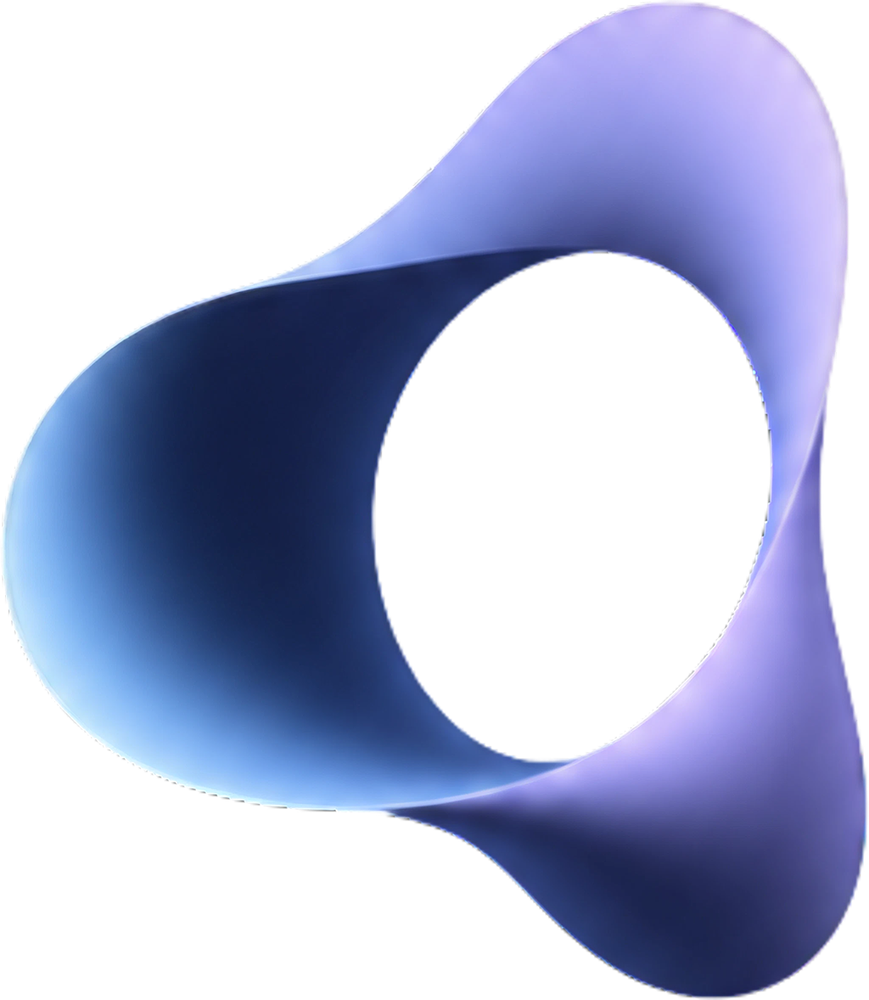

Start here if you want the idea without the jargon.
Most factories push material with tools — nozzles, cutters, robot arms. Those tools can only touch one place at a time. A hand that places atoms one-by-one would never finish a mug in a lifetime.
This machine turns the whole room into the tool. The walls push with invisible waves. Everywhere inside can be held at once — that is how “atoms where” becomes fast enough to matter, and how a machine can one day build another machine.
A closed boundary field determines the interior field (Kirchhoff–Helmholtz / Huygens). Command the surface well enough and there is nothing left inside to command with mechanisms. The Replicator is a boundary-control instrument: acoustic and electromagnetic drives on the chamber walls.
If you control the walls, you control the space. Like speaking into a cave — the shape of the cave changes the echo. Here we choose the echo so sand and beads go where we want.
Topology first: how many commanded faces, how they tile, how channels scale with area. Millimetres come later. Self-replication prefers parts that are themselves field-made patterns of feedstock, not exotic one-off mechanisms.
We do not only store a 3D drawing (triangles). We also store how the thing rings when the walls ask it a question — a short list of notes and who should sing them. Play the notes forward to build. Play them the other way to listen or to take apart.
Native object format is a chord list (~100 bytes/chord): complex poles + port-vectors. Scan measures chords; assemble plays them; acceptance is “does it ring true?” Mesh/STL is an import convenience, not the machine’s native alphabet. File: .pattern.
Phonons: force per watt. Photons: bandwidth for address and sense. Twin v1 is acoustic-forward (T0/T1/T2); no Maxwell solver ships yet. Microwave on the caps is sensing/axial drive — not a fourth marketing “hand.”